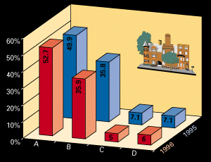
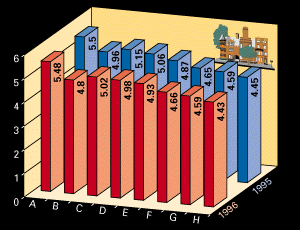
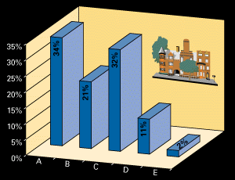

Leben Sie ......... in Bern
A = sehr gern
B = gern
C = es geht so
D = anderer Ort

(6 = sehr zufrieden, 1 = völlig ungenügend)
A = medizinische Versorgung
B = Bildungsangebot
C = öffentliche Verkehrsmittel
D = Einkaufsmöglichkeiten
E = Sportanlagen/Schwimmbäder
F = Grünanlagen
G = Kulturangebot
H = Restaurants

A =
Siedlungsfläche
B = Landwirtschaft
C = Wald
D = Verkehrswege
E = Gewässer